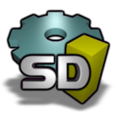

Le CSharp / C#
Le CSharp / C#
C'est quoi le C# ?Le C# (Csharp en anglais britannique) est un langage de programmation orientée objet, commercialisé par Microsoft depuis 2002 et destiné à développer sur la plateforme Microsoft .NET. Il est dérivé du C++ et très proche du Java dont il reprend la syntaxe générale ainsi que les concepts, y ajoutant des notions telles que la surcharge des opérateurs, les indexeurs et les délégués. Il est utilisé notamment pour développer des applications web sur la plateforme ASP.NET. Exemple d'un 'Hello World' sur console :
|
Mon expérience personnelJ'ai moi même (l'auteur du site) fait usage à ce langage pour des projets privé et publique. C'est un langage que j'apprécie tout particulièrement pour : - sa simplicité (à une époque, je le trouvais même plus facile que le langage Python) - sa communauté grandissante toujours la pour t'aider en cas de problème - son utilité (ce langage s'utilise pour tout, des simples logiciels ou des jeux vidéos avec Unity ou des applications Web avec Brazzor ou même des applications mobile [Android et IOS] avec Xamarin) et aussi bien parce que c'est un des tout premier langage que j'ai utilisé. J'ai pour l'instant fait que des projets à courts terme, assez simple de type créations de jeu simple, logiciels de transfère FTP rapide et spécialisé, utilisation du protocole TCP ou encore application pour me faciliter la vie et autre. Je vous invite à visiter mon github, j'y déposerais mes projets les jours où j'aurais le temps : 
|
Les différents logicielsBien que ce langage est était commercialisé par Microsoft, d'autres entreprise on voulu créer leur propre logiciel/IDE (Environnement de développement). Je vous conseille donc ces 3 logiciels : 1. Visual Studio 2019/2022 :Avec ses nombreux atouts et ses nombreuses version, Visual Studio est sans doute le plus connu et le plus utilisé en terme de logiciel de développement. Il est sans cesse mit à jour et comporte de nombreuses qualités qui fait son charme. 
2. SharpDevelop :SharpDevelop est un environnement de développement intégré Open Source, et permet le développement d'application en Visual Basic .NET et en C#. Il fait partie, avec MonoDevelop des alternatives à Visual Studio.Net de Microsoft. (SharpDevelop fonctionne uniquement avec Windows) 3. MonoDevelop :MonoDevelop est un environnement de développement intégré libre de GNOME conçu pour C# et les autres langages .NET. MonoDevelop fait partie du projet Mono. Initialement une réécriture de SharpDevelop pour GTK+, il a évolué à plusieurs reprises depuis son portage. Bien sur, ce ne sont pas les seuls logiciels, il en existe bien d'autre et si vous voulez en savoir plus, vous pouvez aller sur ce site : https://www.logitheque.com/windows/programmation/c-et-c Il répertorie de nombreux logiciels de développement. |
Les défauts du C#Malgré que ce soit un bon langage, le C# possède tout de même des défaults. Et voici les plus importants : - En premier, comme c'est un langage récent, ils souvent mit à jours, ce qui pose problème à pas mal d'entreprise. En effet, un langage souvent mit à jour veut dire nouvelle gestion du code, nouveaux bugs, nouveaux problème et du coup nouvelle mise à jour de logiciels. C'est pour cela que les gens préconise généralement des langage comme le C qui ne seront plus mit à jour pour ne pas avoir recourt à ce genre de soucis. - Ensuite, bien qu'il soit commercialisé par Microsoft, il reste quand même peu connu chez les personne de tout âge comparé au Python qui lui est de plus en plus populaire et notamment au près des jeunes. - Pour finir, son plus gros défaut est la compilation. En effet, quand on va compilé son code en csharp on retrouvera un assembly (Executable ou DLL) en MSIL qui sera traduit en langage machine au moment de l'éxécution par la fonction "just-in-time" de la plateforme .NET. Ce qui veut dire en bref, que après la compilation un humain peut lire le code de votre assembly. Donc des personnes ce sont mit à créer des logiciels qu'on appelle généralement des "décompileur" pour voir plus facilement le code d'un assembly et d'autres ce sont mit à créer des "protégeur de code", ce qui nous ramène à notre prochaine partie. |
Protéger son codePour protéger son code des petits voleurs, des gens on créer ce qu'on appelle des confuser. Malheureusement, les confuser ne sont pas infaillible et donc il y a aussi des dé confuser (unconfuser). Oui, sa devient vraiment compliquer et il y a encore des marchés en activité de distributions du meilleure confuser et du meilleure unconfuser. Donc pour protéger son code c'est très simple : - Télécharger un confuser (voici le plus basique) - Extraire l'archive - Lancer le logiciel ConfuserEx.exe - Drap and droper votre logiciel ou votre DLL dans ConfuserEx 
- Aller dans "Protect!" 
- Cliquer sur "Protect!" 
Et voila le tour est joué. Votre logiciel est protéger même si d'autre logiciel peuvent enlever votre protection mais pour avoir un bon confuser infaillible c'est très difficile mais il en existe, à vous de les créer ou de les trouver. |
TutorielsLe CSharp est un langage qui s'est fortement popularisé ses dernières années notamment par le faite que ce soit un langage récent. Suite à cela, les tutos se multiplient de jours en jours sur internet et c'est pourquoi nous avons fait une sélection de tuto qui pourrait vous plaire. Le tuto que je vous conseille pour débuter :
|
Un problème ? Besoin d'aide ?Si vous avez un problème ou que vous avez besoin d'aide, ne vous inquiétez pas notre équipe est la pour vous ! Ecrivez nous simplement un message et un conseiller vous répondra dès que possible par mail. Quel est votre Email ?Quel est votre Message ? |
Contact/Crédits |